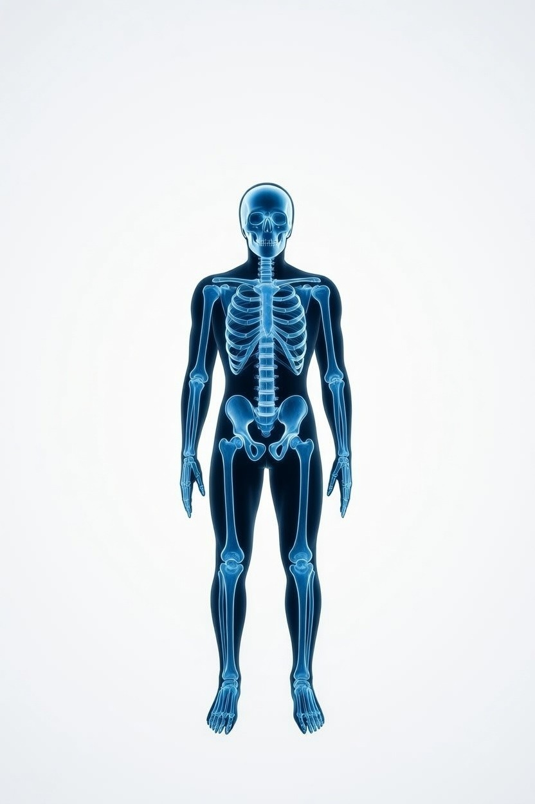
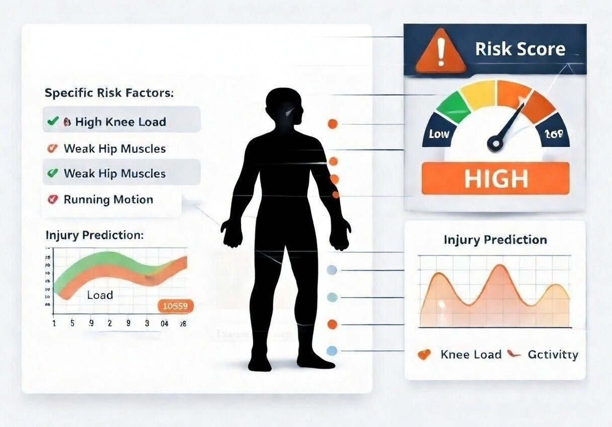
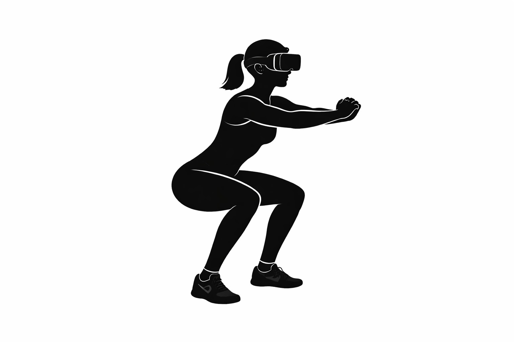
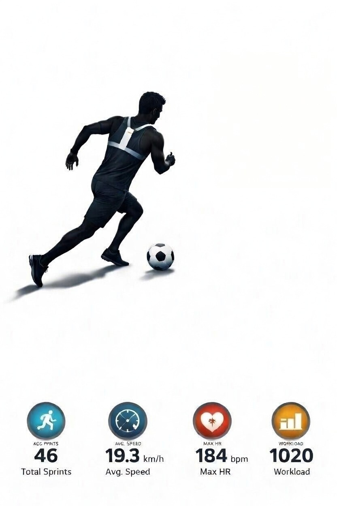

Akhilesh Kumar Ramachandran
Cardiff Metropolitan University
I am a PhD candidate in Sport and Health Sciences at Cardiff Metropolitan University. My background spans research, data analysis, and applied technology, with experience designing studies, building analytical workflows, and prototyping interactive systems. I am drawn to problems where understanding people and data leads to better decisions.
Publications
-
2025
Influence of Neuromuscular Training Interventions on Jump-Landing Biomechanics and Implications for ACL Injuries in Youth Females: A Systematic Review and Meta-analysis
Sports Medicine, 55(5), 1265–1292
-
2024
The effects of strength, plyometric and combined training on strength, power and speed characteristics in high-level, highly trained male youth soccer players: a systematic review
Sports Medicine, 54(3), 623–643
-
2024
Changes in lower limb biomechanics across various stages of maturation and implications for ACL injury risk in female athletes: a systematic review
Sports Medicine, 54(7), 1851–1876
-
2024
Biomechanical and physical determinants of bowling speed in cricket: A novel approach to systematic review and meta-analysis of correlational data
Sports Biomechanics, 23(3), 347–369
-
2024
The correlation of force-velocity-power relationship of a whole-body movement with 20 m and 60 m sprint performance
Sports Biomechanics, 23(10), 1526–1539
-
2024
The clinical utility and reliability of surface electromyography in individuals with chronic low back pain: A systematic review
Journal of Clinical Neuroscience, 129, 110877
-
2022
The paradoxical effect of creatine monohydrate on muscle damage markers: a systematic review and meta-analysis
Sports Medicine, 52(7), 1623–1645
-
2021
Effects of plyometric jump training on balance performance in healthy participants: a systematic review with meta-analysis
Frontiers in Physiology, 12, 730945
Full list on Google Scholar · 377 citations · h-index: 10 · i10-index: 11
Projects

Accuracy of AI-Powered Motion Capture: A Validation Study
Markerless Motion Capture Validation
Explore project →
Biomechanical Risk Modelling and Injury Prediction
Biomechanics & Injury Prevention in Youth Athletes
Explore project →
Immersive Technology for Real-Time Performance Feedback
VR Kinematic Feedback System
Explore project →
Wearable Sensor Analytics for Performance Prediction
GPS & Wearable Athlete Monitoring
Explore project →